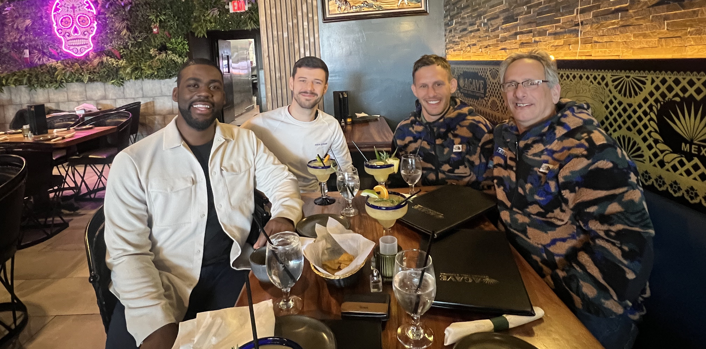
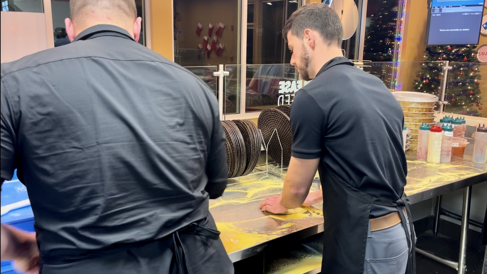
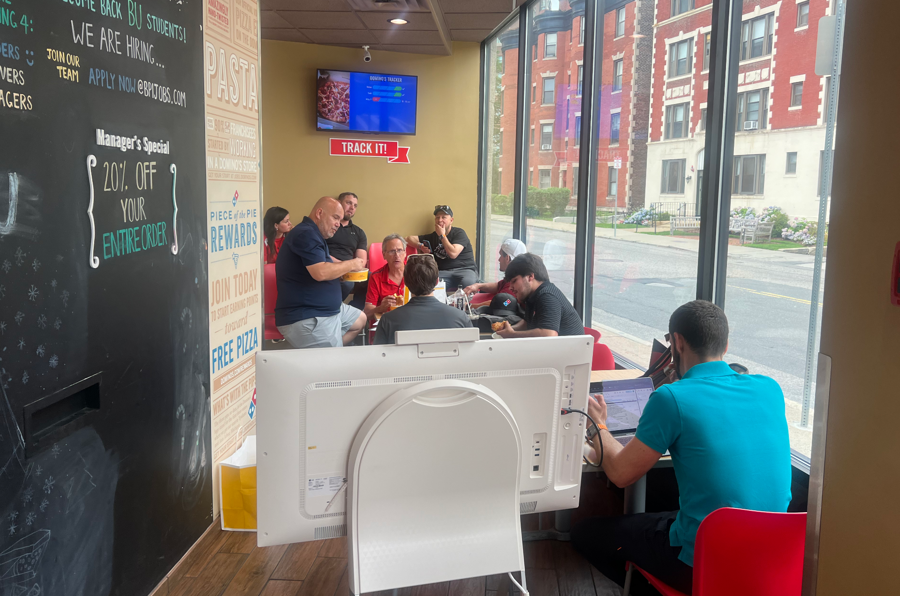
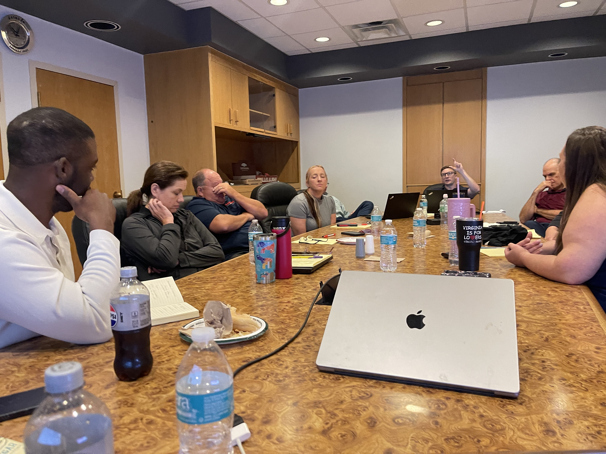
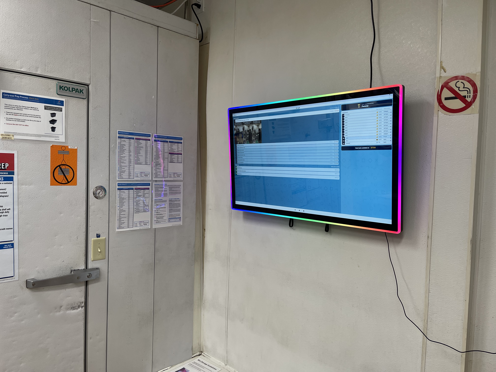
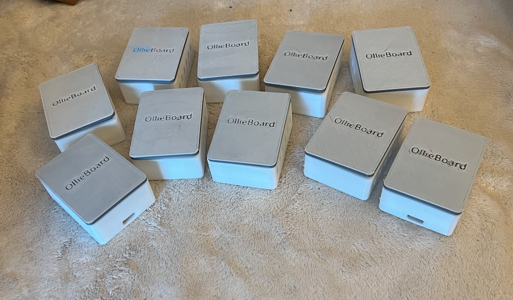

After HourWork was acquired, the CEO asked me to build something new with him. This is the story of zero-to-one product — from a blank whiteboard to sensors mounted inside Domino's stores.
HourWork was acquired in 2024. Most people celebrate and move on. My CEO called me instead — because he'd watched how I worked in the early product phases, and he wanted to do it again. That became OllieBoard.

Early dinner with our co-founders and primary Domino's partners — who became both our pilot customers and investors.
"You don't get asked to co-found something unless someone has seen how you think under pressure — in the zero-to-one phase when nothing is defined and everything matters."
On being invited to start OllieboardAfter watching how I navigated ambiguity, validated ideas quickly, and shipped product at a scrappy startup, the CEO came to me with a simple ask: let's build something new together. When you're two people, "product designer" isn't a title — it's the whole job.
Everything product. Every interface, every algorithm, every sensor mounted in a Domino's store. Design, code, hardware, and the strategic thinking behind all of it — that was mine to figure out.
Owners set their schedules based on feel — what they think they'll need. But no one has mapped every task required to run a store properly. The result is either wasted hours or an understaffed shift that underperforms.
Owners schedule by intuition, not data. Without knowing the real work volume, every schedule is a guess — some days overstaffed, others dangerously thin.
Every store has hundreds of recurring tasks — dough management, sanitation, restocks — that no one has ever catalogued or sequenced. They happen, or they don't.
Inefficiency at this level isn't visible on any dashboard. Owners lose margin to problems they can't quantify — which means they can't fix them either.
"The schedule is a guess. We wanted to make it a science."
OllieBoard core thesisCatalogue every task a store needs. Map it, sequence it, time it. Build the real schedule — not what someone thinks the store needs, but what it actually requires to run at its best.
An operations layer that works like an intelligent manager: knowing what needs to happen, when, and whether it did. Saving money and increasing store quality without adding headcount.
Before designing anything, I spent weeks inside the problem space — stretching dough alongside operators, running workshops with top franchise owners, and conducting 30+ discovery interviews. The goal wasn't to validate a solution. It was to understand what was actually breaking.

Being trained by the owner of a top-10 Domino's franchise — who walked us through every aspect of his operations.
Discovery doesn't happen behind a computer. To understand the real task load in a store, I got in the apron. The owner of a top-10 Domino's franchise gave us a full operational breakdown — every station, every cycle, every decision his employees don't even know is being made.
That kind of access only happens when you show up. And it surfaced constraints no remote interview would have caught.

First Quarterly Gold Standard Workshop — mapping ideal task sequences with four top-performing New England Domino's owners, including a Gold Franny Award winner.

Early prototype review at Papa Gino's — pressure-testing the model beyond Domino's to validate across QSR formats.
My partner wanted to build the scheduling system and test it in stores. I pushed back. Instead, we went into a store and manually assigned tasks to employees — mimicking what the software would do. Within a day, we uncovered critical flaws in our model that would have taken weeks to debug in code. Testing the hypothesis before building it is almost always the right call.
The interface was only one layer. Below it: a task optimization engine, a sensor network, hardware I sourced and installed myself, and algorithms that turn radar data into employee position. Built by one person, from Figma to a wall-mounted screen in a working Domino's.
The first OllieBoard screen mounted and running in a real Domino's location. Designed for back-of-house — loud, fast, no time to learn a new interface. Every design decision was made with that wall in mind.

OllieBoard running live at a Domino's pilot location.

The full sensor set — branded, programmed, and ready for installation across the store.
When we realized self-reported task completion couldn't be trusted, I researched, sourced, and programmed a network of mmWave radar sensors. The algorithms I wrote convert raw radar signal into employee position — so the system knows what's actually happening, not what someone tapped.
Built the core algorithm that ingests every store task — dough management, sanitation, restocks — and surfaces the right job to the right person at the right moment. The foundation for real data-driven scheduling.
Designed for a demanding environment: fast pace, language barriers, aging hardware, employees reading mid-task. Built in Bubble, deployed to mounted screens throughout the store. Legibility and speed were the only metrics that mattered.
Sourced, programmed, assembled, and physically installed sensors in pilot stores. Wrote position-tracking algorithms that turn radar signal into actionable data — giving the system ground truth on whether work is actually being done.
Automated schedule scraping, Domino's data parsing, Discord integrations, AI-assisted training workflows, pitch deck, investor materials, intern management, ERDs, and full product specs. One person, full stack.
Zero-to-one is a constant negotiation between building and learning. The moments I was most wrong are the ones I grew from most.
Employees checked off tasks they hadn't done — "pencil whipping." Self-reported data is not the same as behavioral data. This single insight reshaped the entire sensor strategy and verification layer of the product.
Personal devices create distraction and hygiene concerns in food prep environments. The form factor needs to match the physical reality — guidance only works if it's already where the work happens.
At a two-person startup, scope creep doesn't just slow you down — it fragments your learning. Every feature added before validating the core is debt against clarity. I learned to protect the scope like it was the product itself.
The manual in-store test was the highest-leverage thing we did. One afternoon in a Domino's saved us a month of development. Testing the hypothesis — not the software — is always the right first move.
OllieBoard has moved from concept to in-store pilot. The task engine is live, hardware is installed, and we're positioning for a pre-seed round with real pilot data and top-10 franchise owners already in our corner.
A full operational platform — workstation displays, a task engine, sensor hardware, and a verification layer — from scratch, by two people. Every design decision, every line of code, every sensor mounted on a wall in a working Domino's store.
The judgment to know when to build and when to test. The confidence to push back when the plan is wrong. The range to move between Figma and a hardware enclosure in the same afternoon. And a genuine understanding of what early-stage product work actually requires.
Ready to build something?